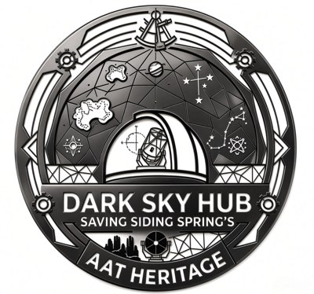
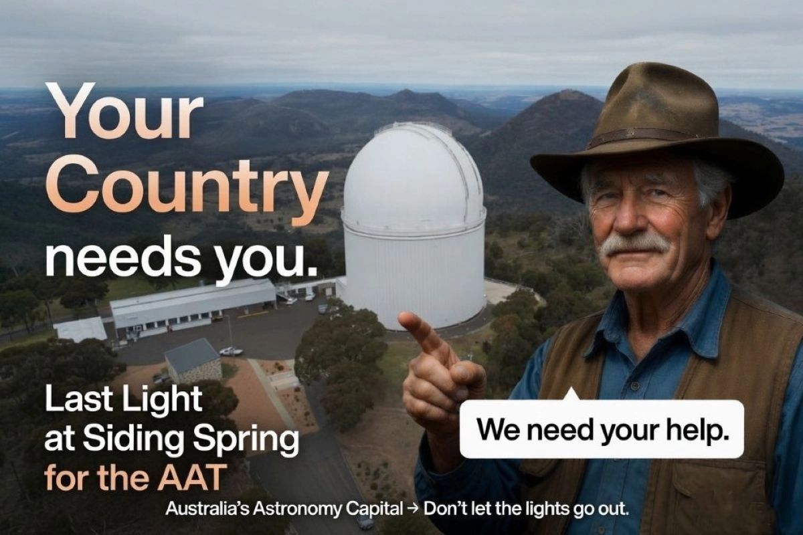
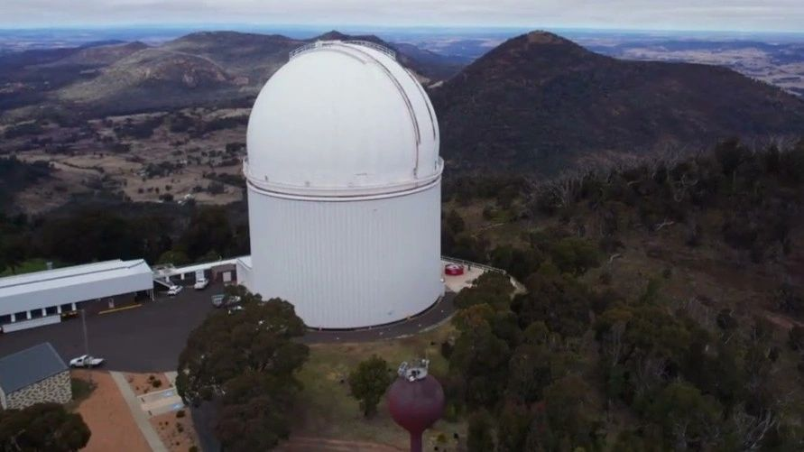
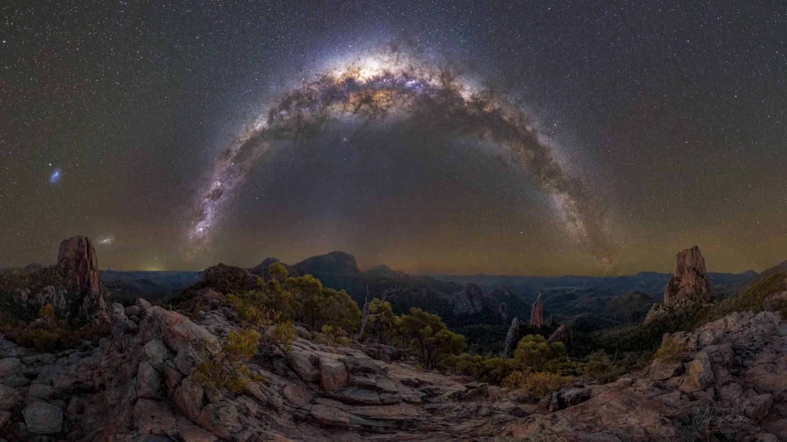
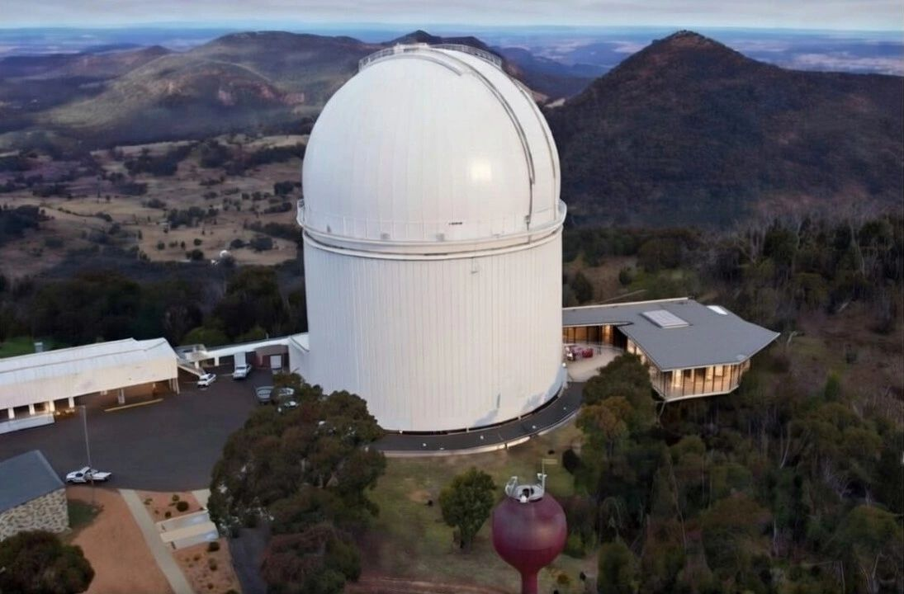

SAVE THE AATSign the petitionThe future of the Anglo-Australian Telescope (AAT) at Siding Spring Observatory will be decided in the coming months. Every action counts. Here is the clearest way you can support the AAT right now.
Sign the petition to save the AAT
Signing is free. Change.org may ask you to chip in, but that money goes to Change.org, not to this campaign. If you would like to support the campaign directly, please email lastlightatsidingspring@gmail.com.

The future of the Anglo-Australian Telescope (AAT) at Siding Spring Observatory will be decided in the coming months. Every action counts in our efforts to secure a managed future for the AAT. Here is the clearest way you can support the AAT right now and help preserve its heritage under our beautiful night sky.
Jamie Chaffey MP, the Federal Member for Parkes, has confirmed his support for a managed future for the Anglo-Australian Telescope. He has already made formal representation to the Minister on this matter, and a further letter incorporating community input is ready to be sent. This is an important step for the campaign.
Sign the Petition and help us save the AAT at Siding Spring Observatory

The single most important action you can take is to add your name. The petition is already being shared with decision makers. Every verified signature reinforces the case for a managed future for the AAT at Siding Spring Observatory.
Respectful messages to relevant federal representatives can significantly impact the future of the AAT. Key people currently listed on the petition include: Jamie Chaffey MP (Member for Parkes), Dr Andrew Charlton MP, and Senator the Hon Tim Ayres. A short, polite note that recognises the heritage value of the AAT and the night sky, while asking for a clear pathway beyond mid-2027, is all that is needed.
Display a poster in a shop, motel, café, or visitor centre. Keep a manual signing sheet on the counter. Share the campaign posts on social media to spread awareness about the AAT. Engage in conversations with visitors and locals about the deadline and the positive pathway we are working towards. Every local conversation builds understanding and support for our cause.
Currently, the organisers are covering early campaign costs. We are in need of specific materials, including large banners, posters, petition printed packs, and web site construction and hosting. If you can contribute in a practical way, please reach out. At the appropriate time, we will launch a clear, time-limited, and transparent fundraising campaign. Stay tuned to this page for updates.
Download ready-to-use email templates to send a respectful message to Senator the Hon Tim Ayres (Minister for Industry and Innovation and Minister for Science) and The Hon Dr Andrew Charlton MP (Assistant Minister for Science, Technology and the Digital Economy). Simply open the file, add your name and any personal connection to the region or the AAT at Siding Spring Observatory, then copy and send. Every polite, informed email helps maintain a clear public pathway for the AAT beyond mid-2027.

We acknowledge that the Anglo-Australian Telescope (AAT) cannot directly compete with the latest generation of optical telescopes overseas. However, we strongly oppose an unmanaged wind-down that neglects the heritage, the instrument, and the regional economy. Instead, we are advocating for a practical, managed transition that saves the AAT at Siding Spring Observatory, built on four clear pillars.
The Solar System Drive already exists along five scenic routes that converge at the AAT. Scaled planet billboards transform the journey to Siding Spring into a signature visitor experience, primed to be refreshed, promoted, and utilised at low cost.
A small community entity is proposed as a bridge between the scientific facility and the public, managing the website and marketing, helping oversee the Solar System Drive, and providing a full-time liaison so local operators, visitors, and the site have a clear point of contact.
An office and visitor centre in Coonabarabran is proposed, with a planetarium as a short-term goal. This indoor, all-weather experience is designed for families, schools, and travellers, and complements existing local businesses.
To better reflect the world ranking of the Dark Sky Park, a quality café and interpretive museum at the foot of the AAT building, with beautiful views of the Warrumbungles, is required. This will be a critical interface between the science and the public, showcasing the area, heritage and the scientific work.

These four pillars form a realistic hybrid model: residual science capability, protected heritage, education, and a visitor experience that can help fund ongoing care of the site.
Using what we have now, energise and expand small pocket sized experiences, corporate functions/conferences and education visits.
As the vision grows, introduce scale with the café concept overlooking the Warrumbungles at the observatory apron. This is the vision future we are working toward.
Add your name before mid-2027.
Contact us: lastlightatsidingspring@gmail.com